4.1 Nonparametric spectral estimation
In the course, the sampling interval \(\Delta_t\) is one, so that the Nyquist frequency \(\omega_\mathsf{N}\equiv 1/(2\Delta_t)\) is 1/2.
The spectrum is the Fourier transform of the autocovariance, viz. \[f(\omega) = \sum_{h =-\infty}^\infty \gamma_h \exp(-2 \pi i h \omega).\]
We thus first must estimate \(\gamma_h=\mathrm{E}\{(X_{t+h}-\mu)(X_t-\mu)\}\). We typically use the sample mean \(\overline{X}\). The sample autocovariance is \[\widehat{\gamma}_h = \frac{1}{n} \sum_{t=1}^{n-|h|} (X_{t+|h|}-\overline{X})(X_t-\overline{X}) = \left( 1- \frac{|h|}{n}\right)\widehat{\gamma}_h^{(u)}\] where \[\widehat{\gamma}_h^{(u)} = \frac{1}{n-|h|} \sum_{t=1}^{n-|h|} (X_{t+|h|}-\overline{X})(X_t-\overline{X})\] is the usual unbiased estimator of \(\gamma_h\).
If we replaced the sample mean estimate \(\overline{X}\) by \(\mu\), then \[\mathrm{E}(\widehat{\gamma}_h) = \left(1- \frac{|h|}{n}\right)\gamma_h.\] The estimator \(\widehat{\gamma}_h\) is thus biased, but
- it has typically lower mean squared error than \(\widehat{\gamma}_h^{(u)}\),
- it gives a positive definite sequence.
- if \(\gamma_h \to 0\) as \(h \to \infty\), then \(\widehat{\gamma}_h\) is guaranteed to go to zero as \(h \rightarrow n\).
The discrete time autocovariance are related to the estimates of the spectrum at continuous frequency, \[\widehat{\gamma}_h = \int_{-1/2}^{1/2} \widehat{f}(\omega)\exp(2\pi i h\omega) \mathrm{d} \omega.\] The estimates \(\{\widehat{\gamma}_k: k = -n+1, \ldots, n-1\}\) and \(\{\widehat{f}(\omega_k): \omega_k = k/(2n-1), k=-n+1, \ldots, n-1\}\) thus form a Fourier transform pair.
Let us look at the periodogram estimate \(I(\omega)\) of a simulated stationary autoregressive process with \(n=1000\). We can compare it to the true spectrum of the AR(2) process with \(\phi_1=0.75\), \(\phi_2=-0.5\) and \(\sigma^2=1\).
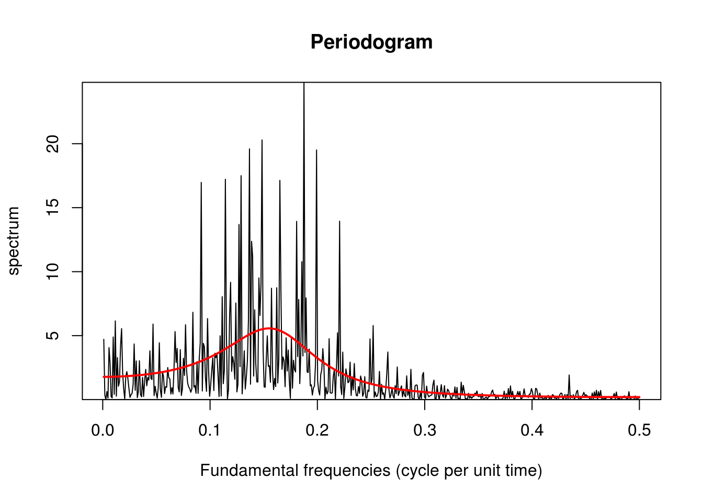
What we notice right away is how noisy the periodogram estimate is. The truth is that the periodogram is a biased and inconsistent estimator: we estimate a frequency based on 2 observations, so even as \(n \rightarrow \infty\), the estimates remain extremely variable. The estimates for distinct frequencies are however almost uncorrelated provided the Fourier frequencies are far and that the bias is not too large.
The expectation of the periodogram is \[\begin{align*}\mathrm{E}\left(I(\omega_j)\right) &= \sum_{h = -n+1}^{n-1} \left(1-\frac{|h|}{n}\right)\gamma_h\exp(-2\pi i \omega h) \\&= \int_{-1/2}^{1/2}n\mathcal{D}_n^2(\omega_j-\omega)f(\omega)\mathrm{d} \omega \end{align*}\] and \(n\mathcal{D}^2(\omega)\equiv W_n(\omega)\) (in the course notation) is the rescaled squared Dirichlet kernel, also known as Fejér’s kernel, \[\mathcal{F}(\omega)=n\mathcal{D}^2(\omega) = \frac{\sin^2(n \pi \omega)}{n\sin^2(\pi\omega)}.\]
The Fejér kernel concentrates as \(n \rightarrow \infty\) and behaves asymptotically like a \(\delta\) function. However, for finite \(n\), it has marked side lobes — these are more visible on the log scale or the decibel scale (\(10\log_{10}(\cdot)\)). One can view the effect of increased sample size by plotting the Fejér kernel for \(n=4, 16, 64\).
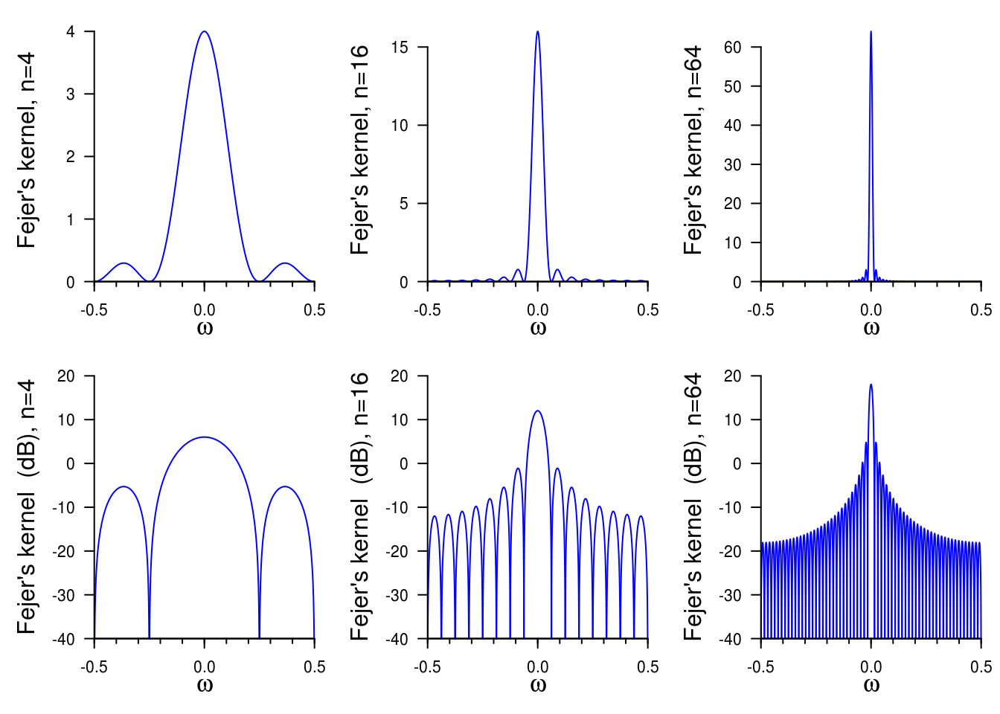
The periodogram is asymptotically unbiased, but the bias largely depends on the dynamic range. The latter is defined as \[d_r = 10 \log_{10} \left( \frac{\max_{\omega}f(\omega)}{\min_{\omega}f(\omega)}\right).\] For white noise, this is zero, so the bias is barely visible even in small samples. However, for processes with high dynamic range, it can be significant even (with \(n\) as large as a million!)
The following example from Percival and Walden illustrates both the bias and the leakage, plus the effect of the sidelobes. The plot shows the true spectrum and the expected values for the periodogram ordinates.

How did these lobes appear? Let’s look at what the Fejér kernel does when convolved with the spectrum. Again, the effect is more apparent on the decibel scale. We focus on the frequency \(\omega=1/8\), which corresponds to the center between the two peaks. The left panels show the Fejér kernel centered at \(\omega=1/8\), while the right one shows the product of the kernel with the spectrum. While we typically only plot \(f(\omega)\) on \((0,1/2)\) because of the symmetry, the \(f(\omega)\) contributes for \((-1/2,0)\) as well so it is displayed. The contribution is the sum of the product of the Fejér kernel at \(\omega=1/8\) with the true spectrum.
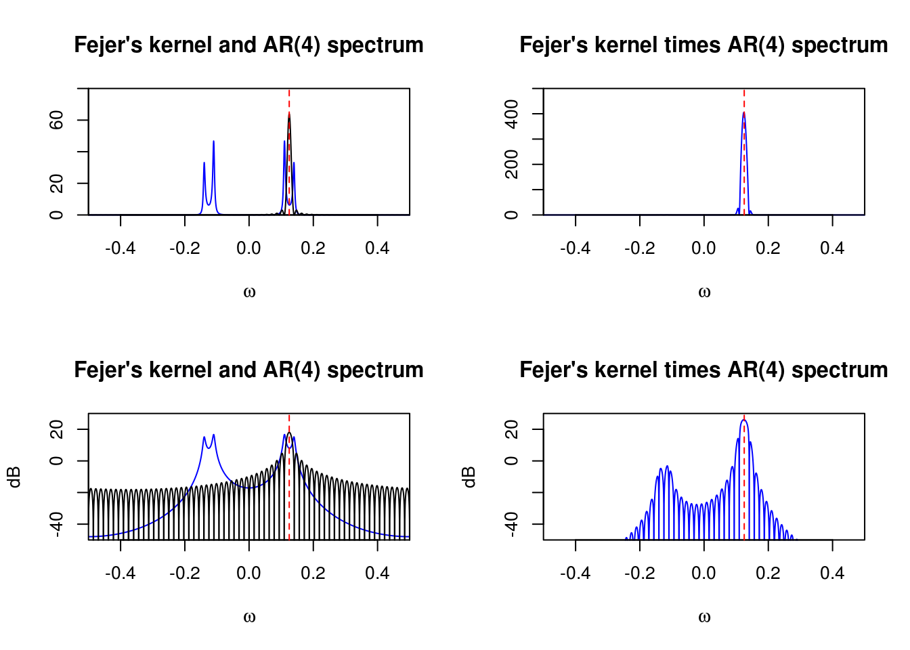
Same thing, but this time for the frequency \(\omega = 1/4\).
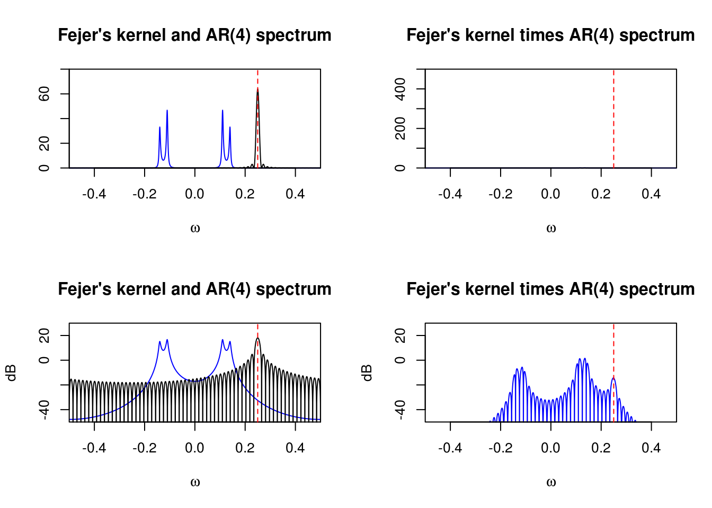 For our AR(4) process with \(n=64\) observations, leakage will happen mostly at high frequencies, \(\omega > 0.3\), where the true spectrum is nearly flat.
4.1.1 Tapering
The goal of tapering is to reduce the bias by reducing the magnitude of sidelobs in the Fejér kernel. In order to do so, we multiply the data by a taper \(h_t\), to form a new series \(X_th_t\) on which we compute the usual periodogram. The resulting estimator is a direct estimate, denoted \(I^d(\omega)\).

One can show that \[\mathrm{E}\left(I^d(\omega_j)\right) = \int_{-1/2}^{1/2}W_n(\omega_j-\omega)f(\omega)\mathrm{d} \omega\] where the spectral window \(W_n(\omega)\), in the course notation, is \[W_n(\omega) = \frac{1}{n}\left| \sum_{t=0}^{n-1} h_t \exp(-2\pi i \omega t) \right|^2\] A rectangular data taper in which \(h_t = 1\) gives back Fejer’s kernel \(\mathcal{F}\) and the periodogram. We will thus consider other tapers, \(\mathcal{H}\) say, which are such that \(h_t\) progressively goes to zero.
To reduce bias due to leakage, we want \(\mathcal{H}\) to have smaller sidelobes than \(\mathcal{F}\). There is no free lunch: such kernels \(\mathcal{H}\) typically have bigger main lobes and thus smears out the peaks, introducing a new source of bias. As such, tapering is most useful for processes with large dynamic ranges. Because tapering discards information, the variance of the estimates also increases.
The next plots show the data taper sequences \(h_t\) for \(t=1, \ldots, n\) and the corresponding spectral window \(\mathcal{H}\) function on the decibel scale. It corresponds to an mix between the Hanning taper, which ressembles a bell curve, and the rectangular weights. The default taper in R smooths the first and last \(p\) percentage of the time points.
\[\begin{align*} h_t = \begin{cases} \frac{1}{2}\left(1-\cos\left(\frac{\pi t}{np}\right)\right), & \text{ if } 1\le t< np \\ 1, &\text{ if } np \le t \le n(1-p) \\ \frac{1}{2}\left(1-\cos\left(\frac{\pi (n+1-t)}{np}\right)\right), &\text{ if } n(1-p)<t\le n. \end{cases} \end{align*}\]
The proportion \(p=0\) gives back the raw periodogram, while \(p=1\) gives the Hanning taper. The tapers and spectral windows (for the portion \((0,1/2)\) are shown here for \(p=0, 0.2, 0.5, 1\).
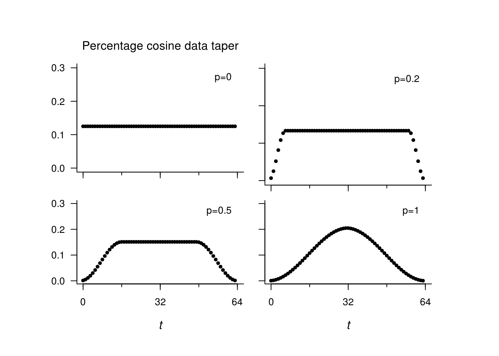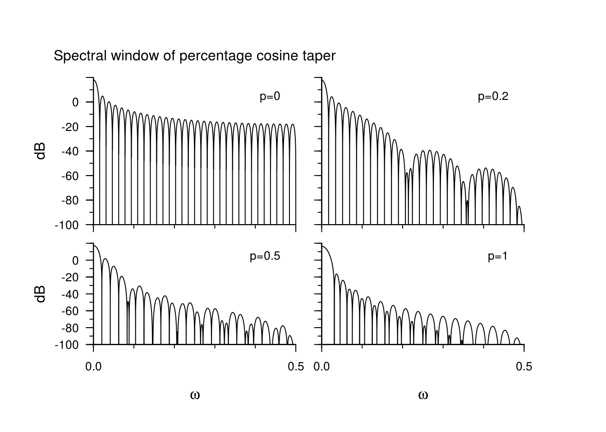
As we increase the tapering, the sidelobes of become progressively smaller, but the width of the main lobe increases. This we will illustrate with a special taper, for which the phenomenon is most visible.
The Slepian tapers are special tapers that minimize the energy in the side lob. They are the filters whose transfer function is maximized in a specified range \(|\omega|< W\). They are oftentime parametrized in terms of \(nW\), and \(nW=1\) gives back (roughly speaking) the Fejér kernel, while \(nW=2\) is closer to the Hanning taper.
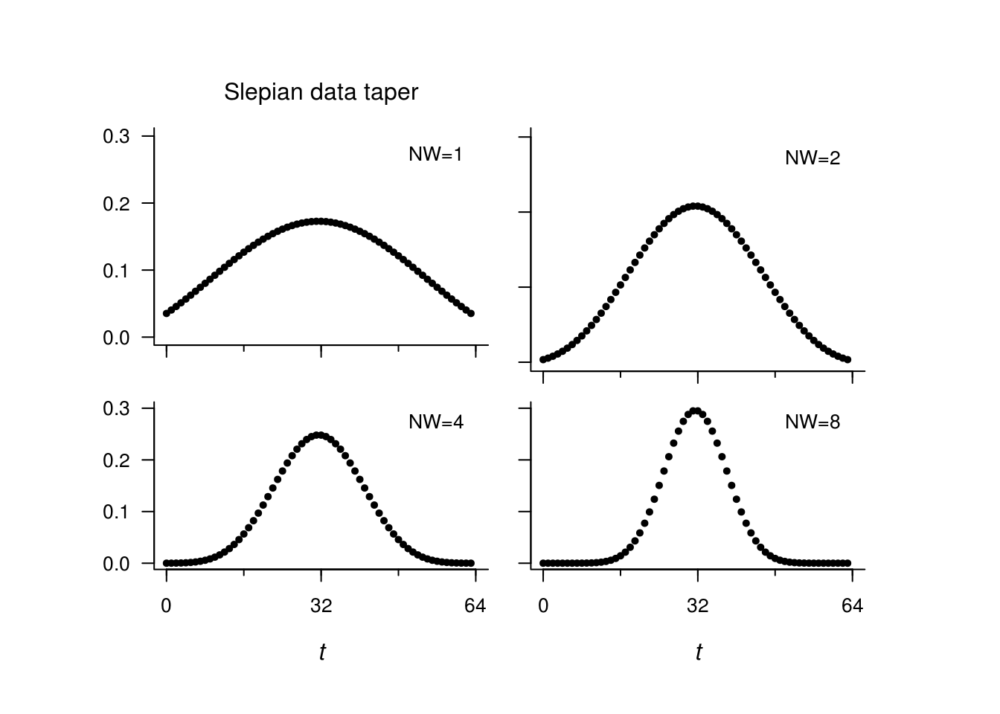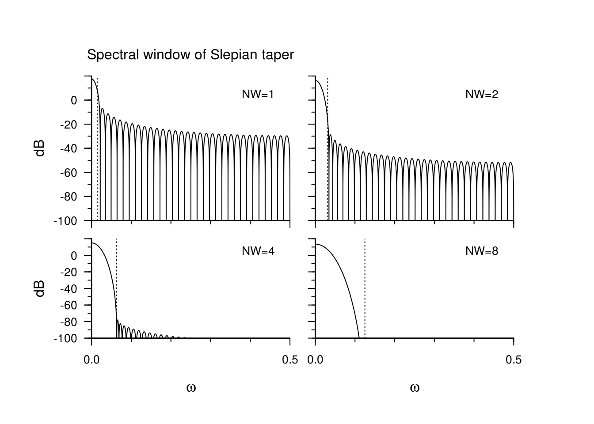
What happens when we overtaper a series? The following plot shows the expected value of the direct estimate of the spectrum based on 64 observations (!) compared to the true estimate. The underlying spectrum is that of an AR(4) series.

4.1.2 A data example
We now illustrate the calculation of the raw periodogram on the sunspot dataset.
source("http://faculty.washington.edu/dbp/s520/R-code/tapers.R")
sunspot = c(scale(sqrt(sunspot.year), scale = FALSE)) #Square root transformed sunspot, centered
n <- length(sunspot)
nj <- floor(n/2)
om <- (1:nj)/n
# Calculate manually the periodogram using the formulas for the regression
# coefficients
a <- b <- vector(mode = "numeric", length = nj)
for (j in 1:nj) {
a[j] <- sum(sapply(1:n, function(t) {
sunspot[t] * cos(2 * pi * t * j/n)
}))
b[j] <- sum(sapply(1:n, function(t) {
sunspot[t] * sin(2 * pi * t * j/n)
}))
}
# Plot the log-periodogram
plot(om, 10 * log10(2/n^2 * (a^2 + b^2)), main = "Scaled log-periodogram", xlab = "Fundamental frequencies (cycle per unit time)",
ylab = "Decibels (dB)", type = "l")
# Repeat the calculations, this time using the FFT
lines(om, 10 * log10(Per <- 2 * (Mod(fft(sunspot))[2:(nj + 1)]/n)^2)) #lines overlayed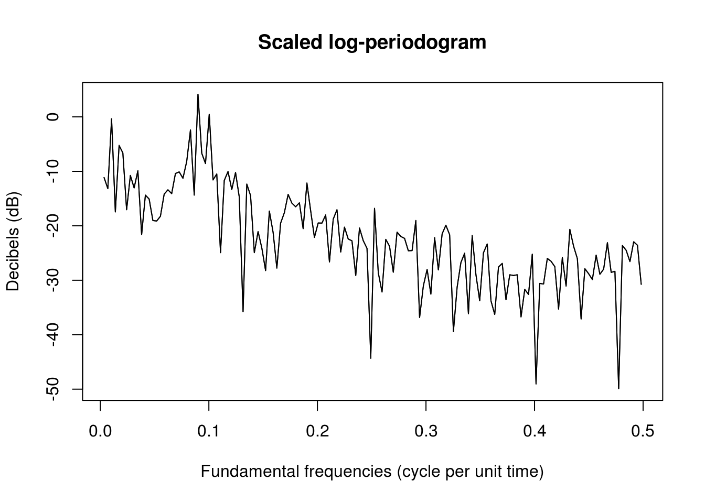
The two definitions are thus identical, but one must be careful with the different scalings employed in different references.
It is customary to include trailing zeros in the series to make the latter divisible by a low prime, potentially doubling its length. Padding with zero does not affect the properties of the estimator, but rather the frequency at which the estimates are computed. Padding is used to make computations faster.
We illustrate zero-padding and tapering in the next plots. We abstain from now from smoothing.
# plot((1:nj)/n, Per, type='l', xlab = 'Frequency', ylab = 'Spectral
# density', main = 'Periodogram') Zero padding
M <- 2 * nextn(n, factors = 2) #1024, next power of 2 greater than sample size
# calculate the periodogram with the FFT with zero padding
ffreq <- seq(1/M, 0.5, by = 1/M)
spec_pgram <- abs(fft(c(sunspot/sqrt(n), rep(0, M - n)))[2:(M/2 + 1)])^2 #square modulus of FFT data,
plot(ffreq, 10 * log10(spec_pgram), xlab = "Fundamental frequencies (cycle per unit time)",
ylab = "Decibels (dB)", type = "l", main = "Log-periodogram")
# Tapering
tapc_sunspot <- cosine.taper(N = n, p = 0.5) * sunspot
taps_sunspot <- slepian.taper(N = n, NW = 2) * sunspot
spec_tap_cos <- abs(fft(c(tapc_sunspot, rep(0, M - n)))[2:(M/2 + 1)])^2
spec_tap_sle <- abs(fft(c(taps_sunspot, rep(0, M - n)))[2:(M/2 + 1)])^2
lines(ffreq, 10 * log10(spec_tap_cos), col = 3)
lines(ffreq, 10 * log10(spec_tap_sle), col = 4)
legend(x = "bottomleft", col = c(1, 4, 3), lty = c(1, 1, 1), legend = c("Fejer",
"Slepian (NW=4)", "Cosine (0.5)"), bty = "n")
Since the dynamic range is low, tapering has little effect here.
4.1.3 Smoothing
Smoothing is the last modification we shall cover. The goal here is to convolve the periodogram estimate for the tapered data with a kernel. We typically consider linear filters that reproduce simple moving average. The effective range of the smoother depends on a bandwidth parameter, but the latter is model dependent.
The smoothing illustrated below is performed using modified Daniell smoothers, which are simply moving averages that give half weight to the end values of the span. The simple Daniell filter gives equal weight, but it can be applied recursively. Increasing spans smooths the raw periodogram plotted in the first call to spectrum. The spans should be odd integers, and smoother results are obtained if they are different and at least two are used.
par(mfrow = c(1, 3))
plot(kernel("daniell", m = 3))
plot(kernel("daniell", m = c(3, 3)))
plot(kernel("modified.daniell", m = c(3, 3)))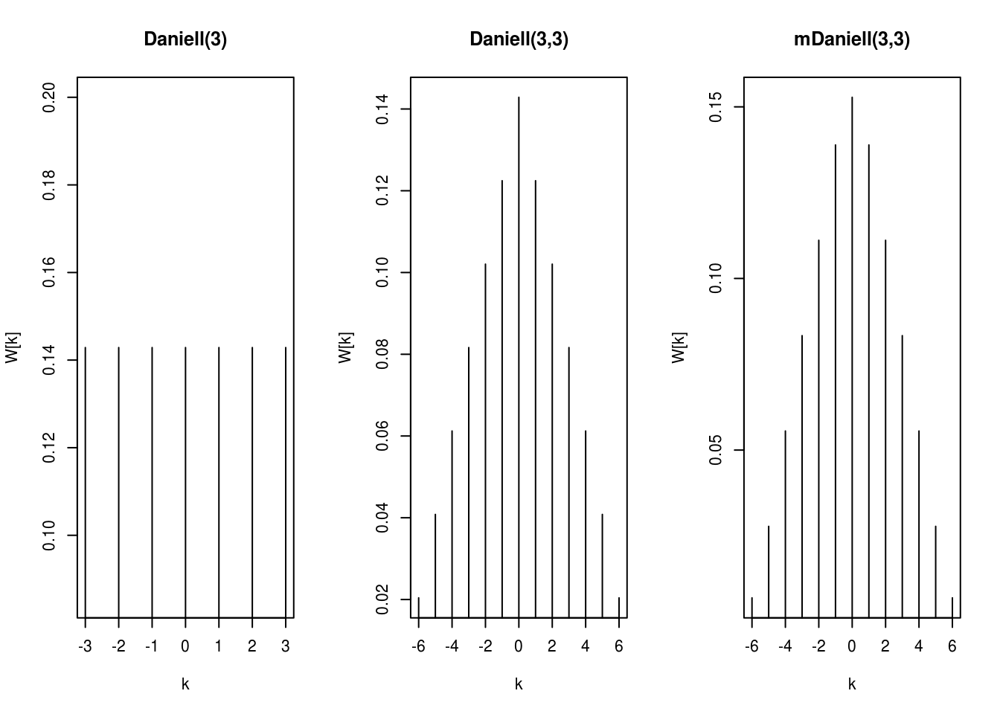
ker <- kernel("modified.daniell", m = c(3, 3))
par(oldpar)
# Convolve the kernel with the periodogram
smooth_spec <- kernapply(spec_tap_sle, ker, circular = TRUE)
plot(ffreq, 10 * log10(spec_pgram), xlab = "Fundamental frequencies (cycle per unit time)",
ylab = "Decibels (dB)", type = "l", main = "Log-periodogram")
lines(ffreq, 10 * log10(smooth_spec), col = 2)
legend(x = "bottomleft", col = c(1, 2), lty = c(1, 1), legend = c("raw", "tapered and smoothed"),
bty = "n")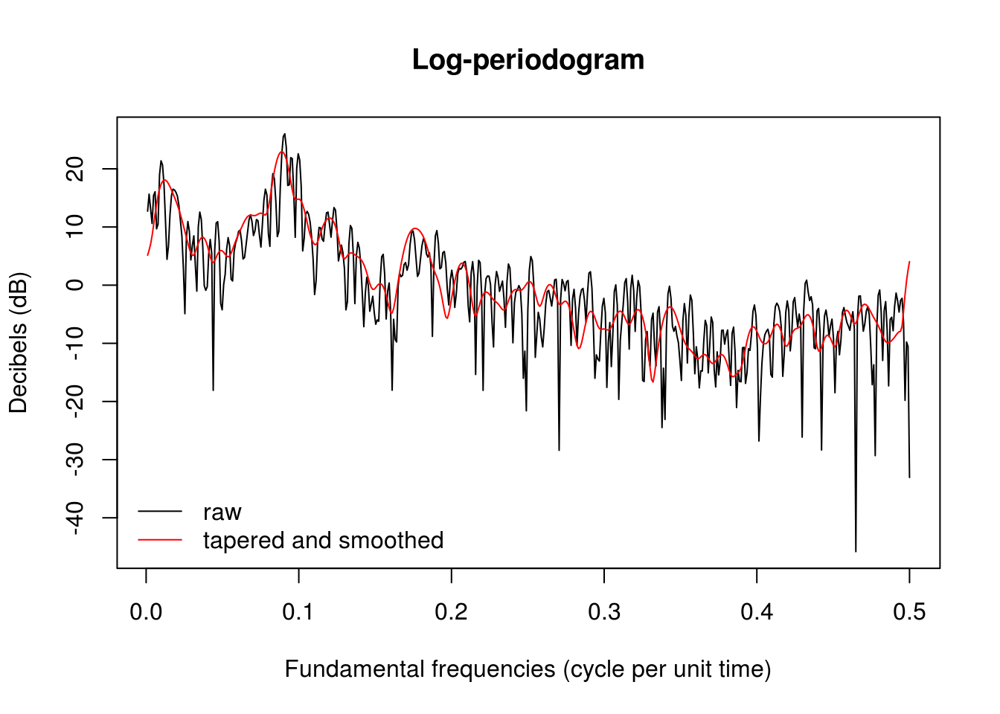